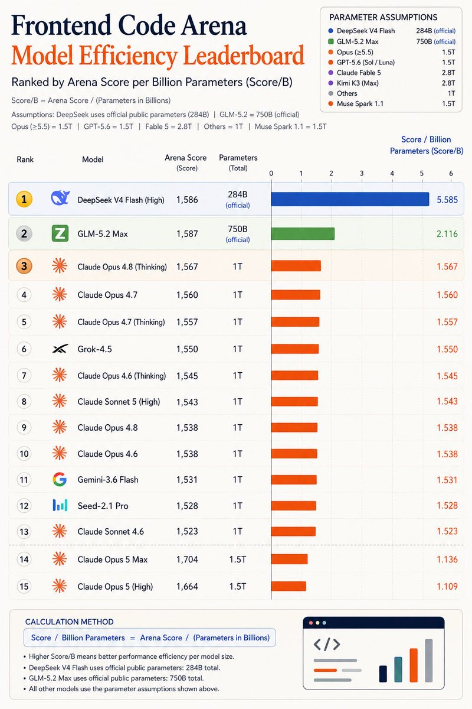

洛铃🦊Magic Caster
@LolingVerse
@ZeroZ_JQ 怎么知道底下闭源模型parameters是多少的

关木
@ZeroZ_JQ
在企业私有化场景非常适合使用DeepSeek v4 flash
- 非大厂技术能吧集群显卡部署好非常难，又是网络就是nvlink，这直接就排除了满血版的glm和kimi
- 8卡的h20可以部署两套v4flash
- 企业中非编码场景v4 flash足够
- 现在就算算租赁h20，整体部署一套flash的成本也是很多企业可以接受的。 https://t.co/S15q4KXFtX